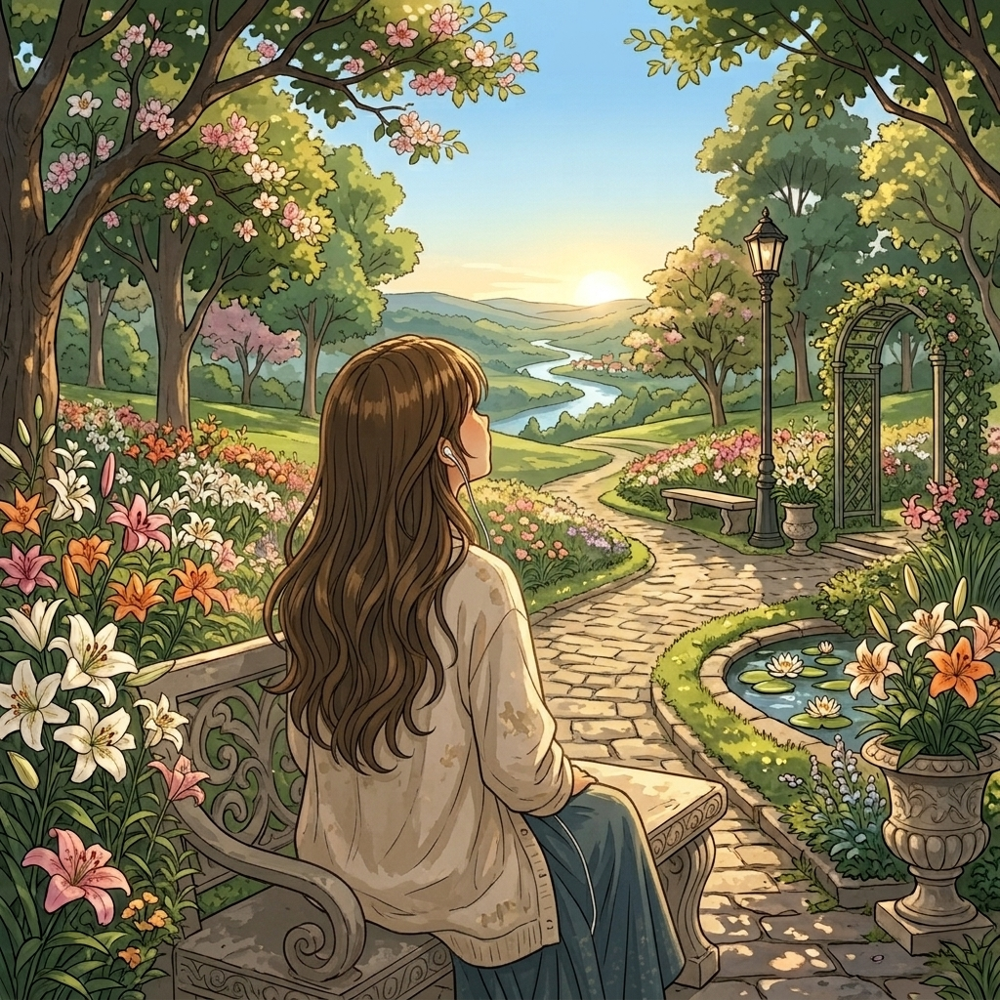

MUNDO DE EUDORA
05 / 07
O jardim
Algumas flores não florescem no mesmo tempo... e isso também faz parte da beleza.

05
✿
No fim da tarde, Eudora encontrou um pequeno jardim escondido entre as árvores.
Havia lírios por toda parte, balançando suavemente com o vento.
Ela se sentou entre as flores e, por alguns instantes, apenas ficou ali.
Às vezes, tudo o que precisamos
é de um lugar tranquilo para ficar. ✿
Sua jornada
5 de 7